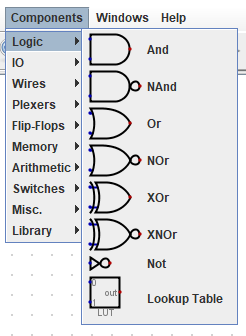
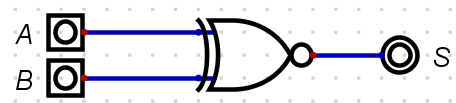
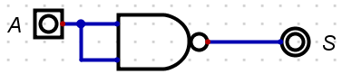
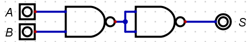
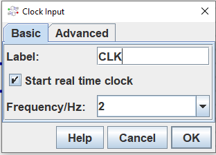

Introduction
Special thanks to Seb Blair for preparing this mdbook and allowing us access to it.
This mdBook will grow over the duration of this module with new labs/workshops and general content needed to test and increase your knowledge of computer programming.
|
The mdBook accessed outside of blackboard and is mobile and tablet friendly. :
|
Accessibility and Navigation
There are several methods for navigating through the chapters (i.e., sessions).
The sidebar on the left provides a list of all chapters/sessions. Clicking on any of the chapter/session titles will load that page.
The sidebar may not automatically appear if the window is too narrow, particularly on mobile displays. In that situation, the menu icon () at the top-left of the page can be pressed to open and close the sidebar.
The arrow buttons at the bottom of the page can be used to navigate to the previous or the next chapter.
The left and right arrow keys on the keyboard can be used to navigate to the previous or the next chapter.
Top menu bar
The menu bar at the top of the page provides some icons for interacting with the book. The icons displayed will depend on the settings of how the book was generated.
| Icon | Description |
|---|---|
| Opens and closes the chapter listing sidebar. | |
| Opens a picker to choose a different color theme. | |
| Opens a search bar for searching within the book. | |
| Instructs the web browser to print the entire book. | |
| Opens a link to the website that hosts the source code of the book. | |
| Opens a page to directly edit the source of the page you are currently reading. |
Tapping the menu bar will scroll the page to the top.
Search
Each book has a built-in search system.
Pressing the search icon () in the menu bar, or pressing the S key on the keyboard will open an input box for entering search terms.
Typing some terms will show matching chapters and sections in real time.
Clicking any of the results will jump to that section. The up and down arrow keys can be used to navigate the results, and enter will open the highlighted section.
After loading a search result, the matching search terms will be highlighted in the text.
Clicking a highlighted word or pressing the Esc key will remove the highlighting.
You have the ability to change the theme of the mdBook by clicking the icon on the top left mdBook. Additionally, there is a toggle for the table of content, and a search tool.
Issues
If you notice a mistake you can notify the module team who can make the correction. You may be instructed to raise an actual github issue.
Printing
Currently the mdBook is approximately 60+ pages, and the environmental impact per page ~10.2L water, 2g CO\(_2\) and 2g wood. Therefore, ~600L water, 120g CO\(_2\) and 120g wood would be needed to produce a paper copy of this mdBook.
The environmental effects of paper production include deforestation, the use of enormous amounts of energy and water as well as air pollution and waste problems. Paper accounts for around 26% of total waste at landfills
Therefore, please print only if this is really necessary.
Exploring Logic Gates
The Exploring Logic Gates lab is designed for you to explore the basic logic gates, simple logic circuits and truth tables. You will be using ``, a simulation tool for logic gates and other computer hardware.
IMPORTANT
Download and extract to a convenient place on your OneDrive or other cloud storage centre so the application is accessible on any machine you use.
Digital source code and project can be found on here:
- https://learn.canterbury.ac.uk/bbcswebdav/pid-3692905-dt-content-rid-7006465_1/xid-7006465_1 or...
- From here logic_simulator
If you are stuck ASK FOR HELP.
Once downloaded place in your OneDrive and unzip. Navigate to the Digital application and run.
- Linux see this video Linux Installer Guide
Watch the video provided in the link below, where you are guided through the basic operations of Digital that are needed for the is lab here:
Once you have watched this you may continue with the lab sheet.
Exercise One
In this exercise you are going to familiarise your self with placing components and operating the Logic Gates.
The image below shows the location of where you will find the Input and Output components. You will need to select at least one Output and one or two Input components:

Next logic gates are selected as seen in the image below:

NOT
Firstly, set up the the circuit in below:

Press the the play icon, ►, and toggle the input component labelled as 'A', does it behavior as per the truth table below?
| A | S |
|---|---|
| 0 | 1 |
| 1 | 0 |
CALL TO ACTION
Save the circuit in OneDrive call it
Logic-Gates-Exercise-1
OR
Continuing in the same file add the OR gate underneath the NOT circuit so that your new circuit looks like below.

Press the the play icon, ►, and toggle the input component labelled as 'A' and 'B', does it behavior as per the truth table below?
| A | B | S |
|---|---|---|
| 0 | 0 | 0 |
| 1 | 0 | 1 |
| 0 | 1 | 1 |
| 1 | 1 | 1 |
CALL TO ACTION
Re-save the circuit again.
AND
Continuing in the same file add the AND gate underneath the OR so that your :new circuit looks like the image below.

Press the the play icon, ►, and toggle the input component labelled as 'A' and 'B', does it behavior as per the table below?
| A | B | S |
|---|---|---|
| 0 | 0 | 0 |
| 1 | 0 | 0 |
| 0 | 1 | 0 |
| 1 | 1 | 1 |
CALL TO ACTION
Re-save the circuit again.
XOR
Continuing in the same file add the XOR gate underneath the AND circuit so that your new circuit looks like the image below:

Press the the play icon, ►, and toggle the input component labelled as 'A' and 'B', does it behavior as per the truth table below:
| A | B | S |
|---|---|---|
| 0 | 0 | 0 |
| 1 | 0 | 1 |
| 0 | 1 | 1 |
| 1 | 1 | 0 |
CALL TO ACTION
Re-save the circuit again
XNOR
Continuing in the same file add the XNOR gate underneath the XOR circuit so that your new circuit looks like image below:

Press the the play icon, ►, and toggle the input component labelled as 'A' and 'B', does it behavior as per the truth table below:
| A | B | S |
|---|---|---|
| 0 | 0 | 1 |
| 1 | 0 | 0 |
| 0 | 1 | 0 |
| 1 | 1 | 1 |
CALL TO ACTION
Re-save the circuit again
NOR
Continuing in the same file add the NOR gate underneath the XNOR circuit so that your new circuit looks like the image below:

Press the the play icon, ►, and toggle the input component labelled as 'A' and 'B', does it behavior as per the truth table below?
| A | B | S |
|---|---|---|
| 0 | 0 | 1 |
| 1 | 0 | 0 |
| 0 | 1 | 0 |
| 1 | 1 | 0 |
CALL TO ACTION
Re-save the circuit again
NAND
Continuing in the same file add the NAND gate underneath the NOR circuit so that your new circuit looks like the image below:

Press the the play icon, ►, and toggle the input component labelled as 'A' and 'B', does it behavior as per the truth tabel below:
| A | B | S |
|---|---|---|
| 0 | 0 | 1 |
| 1 | 0 | 1 |
| 0 | 1 | 1 |
| 1 | 1 | 0 |
CALL TO ACTION
Re-save the circuit again
Exercise Two: Investigation
The following universal logic gate circuits below can be constructed to create any of the fundamental gates. Investigate with the construction of truth ables match a universal logic gate circuit with a fundamental logic gate.
Universal Logic Circuit 1
CALL TO ACTION
Create a new file.
Firstly, set up the the circuit as seen below:

Press the the play icon, ►, and toggle the input component labelled as 'A', what fundamental gate is this?
-
AND
-
XNOR
-
NOT
-
OR
Click for solution
- NOT
Once you have found the answer, navigate back to and select Components -> IO and label the circuit with your answer.
CALL TO ACTION
Save the circuit in OneDrive call it
Logic-Gates-Exercise-2
Universal Logic Circuit 2
Set up the the circuit in image below and place the new circuit beneath the last circuit created.

Press the the play icon, ►, and toggle the input component labelled as 'A' and 'B', what fundamental gate is this?
-
XNOR
-
OR
-
NOT
-
NAND
-
AND
Click for solution
- AND
Once you have found the answer, navigate back to and select Components -> IO and label the circuit with your answer.
CALL TO ACTION
Re-save the circuit
Universal Logic Circuit 3
Set up the the circuit below and place it beneath the last circuit created.

Press the the play icon, ►, and toggle the input component labelled as 'A' and 'B', what fundamental gate is this?
-
XNOR
-
OR
-
NOT
-
NAND
-
NOR
Click for solution
- OR
Once you have found the answer, navigate back to and select Components -> IO and label the circuit with your answer.
CALL TO ACTION
Re-save the circuit
Universal Logic Circuit 4
Set up the the circuit as seen below, beneath the last circuit created.

Press the the play icon, ►, and toggle the input component labelled as 'A' and 'B', what fundamental gate is this?
-
XOR
-
OR
-
NOT
-
AND
-
NOR
Click for solution
- XNOR
Once you have found the answer, navigate back to and select Components -> IO and label the circuit with your answer.
CALL TO ACTION
Re-save the circuit
Universal Logic Circuit 5
Set up the circuit up as seen below, beneath the last circuit created.

Press the the play icon, ►, and toggle the input component labelled as 'A' and 'B', what fundamental gate is this?
-
NOT
-
XOR
-
OR
-
AND
-
XNOR
Click for solution
- XOR
Once you have found the answer, navigate back to and select Components -> IO and label the circuit with your answer.
CALL TO ACTION
- Re-save the circuit
- Go to your preferred search engine and search for 'Universal gate equivalents' and replicate the circuits we have not done in this file.
Exercise Four: Experimentation
You are now going to use the clock to generate signals: ON/OFF or 1/0 or HIGH/LOW or 0V/5V.
CALL TO ACTION
Create a new file.
Now get the components in the following order, so that your circuit looks like below:
-
AND Gate
-
Input
-
Clock Input
-
Output
-
Data Graph

Like with all other circuits so far, right click a component and them labels as shown above.
You will notice that when you right click the Clock Input you will get additional options, replicate the image below:

Make sure that the Data Graph component option Max number of steps to is set to 25.
When you run this circuit you should see something similar to the image below:

CALL TO ACTION
- Save the circuit in OneDrive call it ``
- Experiment with different Clock Input Frequencies, what observations can you make? Discuss with the a peer or with the tutor.
- Replace the
with anotherand chose different frequencies. Look at the Data Graph is there a pattern? Is it random? Discuss with your peers or with the tutor.
Exercise Five: Investigate
You are now going to create an arithmetic circuits; Half Adder and Full Adder
CALL TO ACTION
Create a new file.
Half Adder
Reproduce the Half Adder as seen in below:
 {#fig:Half_Adder}
{#fig:Half_Adder}
... and then simulate so you can complete the truth table below:
| A | B | S | Cout |
|---|---|---|---|
Click for solution
| A | B | S | Cout |
|---|---|---|---|
| 0 | 0 | 0 | 0 |
| 0 | 1 | 1 | 0 |
| 1 | 0 | 1 | 0 |
| 1 | 1 | 0 | 1 |
Full Adder
Produce a Full Adder and then simulate so you can populate, you should refer to the lecture slides.
| A | B | Cin | S | Cout |
|---|---|---|---|---|
Click for solution
| A | B | Cin | S | Cout |
|---|---|---|---|---|
| 0 | 0 | 0 | 0 | 0 |
| 0 | 0 | 1 | 1 | 0 |
| 0 | 1 | 0 | 1 | 0 |
| 0 | 1 | 1 | 0 | 1 |
| 1 | 0 | 0 | 1 | 0 |
| 1 | 0 | 1 | 0 | 1 |
| 1 | 1 | 0 | 0 | 1 |
| 1 | 1 | 1 | 1 | 1 |
CALL TO ACTION
- Save the circuit in OneDrive call it ``
- Experiment with different Clock Input Frequencies, what observations can you make? Discuss with the a peer or with the tutor.
- Replace the
with anotherand chose different frequencies. Look at the Data Graph is there a pattern? Is it random? Discuss with your peers or with the tutor.
Exercise Six: Research and Implement
Investigate & research the circuit of a 2-bit decoder, implement this and verify operation through a complete truth table and simulation.
CALL TO ACTION
Create a new file.
Problem to Logic Circuit Design
The Problem to Logic Circuit Design lab is designed for you to get on with problem solving.
As described in the lecture slides, simulate the circuit using Digital simulator for the following problem specification for an alarm to ring. To understand how to use Digital simulator, revisit Logic Gates worksheet.
Example Scenario
The alarm will ring if the alarm switch is turned on and either the door is not closed or window is not closed; where variables are given below:
- Output Variable: Alarm = F ; 1 ON, 0 OFF
- Input variables : Alarm switch = A; 1 ON, 0 OFF
- Door status = B; 1 CLOSED, 0 OPEN
- Window Status = C ;1 CLOSED, 0 OPEN
The image below shows the components used for the minimised circuit is given below. You need place these components in the work area of Digital editor and then after wiring up simulate and check if the outputs are the same as in the truth table (see tutorial slide) for all possible inputs.
CALL TO ACTION
- Identify each gate without using Digital or notes?
- Wire up the circuit
- What is the Boolean Equation for this circuit?
- Minimise the Boolean Equation
- Redraw the circuit based on the minimised Boolean Equation
-
Test the circuit for the following test conditions:
-
ABC = 110
-
ABC = 010
-
Example Scenario Solution
The below circuit is the implementation of the following equation , which requires 5 gates:

This circuit can be represented using the Boolean Equation below.
\(S = A.\overline{B} + A.\overline{C}\)
The minimisation process therefore is:
\(S = A.\overline{B} + A.\overline{C}\)
\(S = A.\overline{B} +\) A \(.\overline{C}\)
\(S = A.(\overline{B} + \overline{C})\)
Which in-turn produces the following images, with 4 gates:

The circuit below shows the example simulation for the test condition for ABC=110:

The same circuit with a change in input status shows the example simulation for the test condition for ABC=010:

Scenario 1
CALL TO ACTION
Create a new file.
You need to create a logic circuit for a warning light which will be placed on a skip at night to warn any approaching drivers that there is a hazard in the road. The light should only operate in the dark and the light should be flashing. The light sensor produces a logic 0 in the daylight, and Logic 1 in the dark. Follow the steps below:
- Find the input and output variables
- Construct the Truth Table
- Write the Boolean Equation: "Output = Sum of the Standard ProductTerms"
- If needed, minimise the equation using Boolean Algebra
- Draw logic circuit for the minimised equation
- Using Digital simulator, do a multi-step timing diagram simulation.
Your simulation should have the same logic as seen in the image below.

To understand how to do Timing diagram simulation (multistep) in Digital, revisit Logic Gates worksheet.
CALL TO ACTION
- Save the circuit in OneDrive call it
Problem_To_Solution_Experiment_One
Click for Solution
To identify you could create a simple block diagram of the system like below:

You will notice that the two inputs have now been given a letter so that we can identify them in a truth table. In this case there are only two inputs, and therefore there will be four possible combinations of A and B that we have to consider. The next stage is to construct a truth table to show all the possible input conditions and for each set of inputs determine when an output is required.
| Input A | Input B | Output S | Comments |
|---|---|---|---|
| 0 | 0 | 0 | Light Sensor (A) = 0 \(\equiv\) Daylight, Pulse Generator B) = 0 \(\equiv\) Off, Output S = 0 Off |
| 0 | 1 | 0 | Light Sensor (A) = 1 \(\equiv\) Dark, Pulse Generator B) = 0 \(\equiv\) Off, Output S = 0 Off |
| 1 | 0 | 0 | Light Sensor (A) = 0 \(\equiv\) Daylight, Pulse Generator B) = 1 \(\equiv\) On, Output S = 0 Off |
| 1 | 1 | 0 | Light Sensor (A) = 1 \(\equiv\) Daylight, Pulse Generator B) = 1 \(\equiv\) On, Output S = 1 On Z |
From the truth table we can get the Boolean Equation, remember we only need to write out the equation where there is a 1 in the Output column.
\(S = A.B\)
Only one product term so this is the minimised equation, and you should be able to identify the logic gate from the truth table and the Boolean Algebra. See the image directly below for the logic gate solution:

Now you should be able to create the circuit in in Digital like the following image:
Notice that the circuit contains a D attached to the clock so that you can reproduce the .
Scenario 2
CALL TO ACTION
Create a new file.
Create a logic circuit for the buzzer of a car, and it should Buzz when:
- the engine is on, the door is closed, and the seat belt is unbuckled
- the engine is on, the door is open
Assume there are appropriate binary sensors for engine, door and seat belt.
Create and simulate the circuit of the buzzer following the steps below:
- Find input and output variables
- Construct the Truth Table
- Write the Boolean Equation : "Output = Sum of the Standard Product terms"
- If needed, minimise equation using Boolean Algebra
- Draw logic circuit for the minimised equation
- Using Digital Simulator, simulate the circuit.
CALL TO ACTION
Save the circuit in OneDrive call it
Problem_To_Solution_Scenario_Two
Click for Solution
Finding input and output variables:
- Output, Buzzer , S = 1 means ON, 0 means OFF
- Inputs, Engine Key, A = 1 means ON, 0 means OFF
- Car Door, B=1 means Open, 0 means Closed
- Seat belt , C=1 means buckled, 0 means Unbuckled
Using the list of input and output variables the truth table can be created:
| A | B | C | S |
|---|---|---|---|
| 0 | 0 | 0 | 0 |
| 0 | 0 | 1 | 0 |
| 0 | 1 | 0 | 0 |
| 0 | 1 | 1 | 0 |
| 1 | 0 | 0 | 1 |
| 1 | 0 | 1 | 0 |
| 1 | 1 | 0 | 1 |
| 1 | 1 | 1 | 1 |
From the truth table the Boolean Equation can now be derived using the Sum of the Standard Product Terms:
\(S = ABC + AB\overline{C} + A\overline{B} \overline{C}\)
\(S = ABC + \)AB \(\overline{C} + A\overline{B} \overline{C}\) (remember: \(\overline{C} + C = 1)\)
\(S = AB(C +\overline{C}) + A\overline{B} \overline{C}\)
\(S = AB(1) + A\overline{B} \overline{C}\)
\(S = AB + A\overline{B} \overline{C}\)
\(S = AB + \) A \(\overline{B} \overline{C}\)
\(S = A(B + \overline{B} \overline{C})\)
\(S = A(B +\) B \(\overline{C})\)
(remember: a literal on its own cancels its inverted version).
\(S = A(B + \overline{C})\)
The first image shows the logic circuit implementation of the minimised Boolean Equation:

The image below shows the example simulation for the test condition for ABC=100:

Penultimately, the circuit shows the example simulation for the test condition for ABC=100:

Finally, the image below shows the example simulation for the test condition for ABC=100:
Workshop on Boolean Algebra
The Workshop on Boolean Algebra is designed for you to practice Boolean equations and its laws.
Minimising Boolean Expressions
We can use Commutative, Associative, and Distributive Laws to manipulate Boolean expressions.
BOOLEAN LAWS
Commutative Laws
-
\(A + B \Longleftrightarrow B + A\)
-
\(A.B \Longleftrightarrow B.A\)
Associative Laws
-
\((A + B) + C \Longleftrightarrow A + (B + C)\)
-
\((A.B).C \Longleftrightarrow A.(B.C)\)
Distributive Laws
-
\(A + (B + C) \Longleftrightarrow (A + B) + (A + C)\)
-
\(A.(B.C) \Longleftrightarrow (A.B) + (A.C)\)
Axioms
The following rules (axioms) can also be used to minimise Boolean Expressions:
1.
-
A literal by itself cancels out any term that contains it (Absorption):
- \(A + A.B + A.B.C \Longrightarrow A + \)
A.B+A.B.C\(\Longrightarrow A\)
- \(A + A.B + A.B.C \Longrightarrow A + \)
2.
-
A literal by itself knocks out its NOT'ed opposite that appears in any 'minterm' (Absorption):
- \(\overline{A} + A.\overline{B} + A.C \Longrightarrow \overline{A} +\)
A\(.\overline{B} +\)A\(.C \Longrightarrow \overline{A} + \overline{B} + C\)
- \(\overline{A} + A.\overline{B} + A.C \Longrightarrow \overline{A} +\)
Exercise: One
Minimise the following Boolean Expressions:
1. \(\hspace{1.75em}S = \overline{A} + A.C + \overline{B}.C\)
Click for Solution
\(S = \overline{A} + \)A\(.C + \overline{B}.C\)
\(S = \overline{A} + C +\) B.C
\(S = \overline{A} + C\)
2. \(\hspace{1.75em}S = A.C + A.B.C + A.B.\overline{C}\)
Click for Solution
\(S = A.C + A.B.(C + \overline{C})\)
\(S = A.C + A.B.(1)\)
\(S = A.C + A.B\)
3. \(\hspace{1.75em}S = \overline{B} + A.B + A.\overline{B}.C\)
Click for Solution
\(S = \overline{B} + A.\) B \(+\) A.B.C
\(S = \overline{B} + A\)
4. \(\hspace{1.75em}S = \overline{A}.\overline{B}.\overline{C} + A.\overline{B}.\overline{C} + A.C\)
Click for Solution
\(S = \overline{B}.\overline{C}.(A + \overline{A}) + A.C\)
\(S = \overline{B}.\overline{C}.(1) + A.C\)
\(S = \overline{B}.\overline{C} + A.C\)
5. \(\hspace{1.75em}S = C + A.\overline{C} + B.C + A.B.C\)
Click for Solution
\(S = C + A.\)C \(+\) B.C \(+\) A.B.C
\(S = C + A\)
6. \(\hspace{1.75em}S = A.B.\overline{C} + A.B.C + A.\overline{B}.\overline{C} + A.\overline{B}.C + \overline{A}.B.C + \overline{A}.B.\overline{C}\)
Click for Solution
\(S = A.B.(\overline{C} + C) + A.\overline{B}.(\overline{C} + C) + \overline{A}.B.(C + \overline{C})\)
\(S = A.B.(1) + A.\overline{B}.(1) + \overline{A}.B.(1)\)
\(S = A.B + A.\overline{B} + \overline{A}.B\)
\(S = A.(B + \overline{B}) + \overline{A}.B\)
\(S = A.(1) + \overline{A}.B\)
\(S = A +\)A\(.B\)
\(S = A + B\)
7. \(\hspace{1.75em}S = A + B.C + \overline{A}.B.C\)
Click for Solution
\(S = A + B.C +\) A \(.B.C\)
\(S = A + B.C +\) B.C
\(S = A + B.C\)
8. \(\hspace{1.75em}S = B + \overline{A}.B.\overline{C} + A.B.\overline{C} + \overline{A}.C\)
Click for Solution
\(S = B +\) A.B.C \(+\) A.B.C \(+ \overline{A}.C\)
\(S = B + \overline{A}.C\)
Exercise: Two
For each of the following truth tables produce the standard Sum of the Product Terms for the output \(S\). The reduce the Boolean expression to a simpler expression using Boolean algebra.
1.
| A | B | S |
|---|---|---|
| 0 | 0 | 1 |
| 0 | 1 | 1 |
| 1 | 0 | 1 |
| 1 | 1 | 0 |
Click for Solution
\(S = \overline{A}.\overline{B} + \overline{A}.B + A.\overline{B}\)
\(S = \overline{A}.(\overline{B} + B) + A.\overline{B}\)
\(S = \overline{A}.(1) + A.\overline{B}\)
\(S = \overline{A} + A.\overline{B}\)
\(S = \overline{A} +\) A}\(.\overline{B}\)
\(S = \overline{A} + \overline{B}\)
2.
| A | B | S |
|---|---|---|
| 0 | 0 | 0 |
| 0 | 1 | 1 |
| 1 | 0 | 1 |
| 1 | 1 | 0 |
Click for Solution
\(S = \overline{A}B + A\overline{B}\)
3.
| A | B | C | S |
|---|---|---|---|
| 0 | 0 | 0 | 1 |
| 0 | 0 | 1 | 1 |
| 0 | 1 | 0 | 0 |
| 0 | 1 | 1 | 0 |
| 1 | 0 | 0 | 0 |
| 1 | 0 | 1 | 0 |
| 1 | 1 | 0 | 0 |
| 1 | 1 | 1 | 0 |
Click for Solution
\(S = \overline{A}.\overline{B}.\overline{C} + \overline{A}.\overline{B}.C\)
\(S = \overline{A}.\overline{B}.(\overline{C} + C)\)
\(S = \overline{A}.\overline{B}.(1)\)
\(S = \overline{A}.\overline{B}\)
4.
| A | B | C | S |
|---|---|---|---|
| 0 | 0 | 0 | 0 |
| 0 | 0 | 1 | 1 |
| 0 | 1 | 0 | 0 |
| 0 | 1 | 1 | 1 |
| 1 | 0 | 0 | 0 |
| 1 | 0 | 1 | 1 |
| 1 | 1 | 0 | 0 |
| 1 | 1 | 1 | 1 |
Click for Solution
\(S = \overline{A}.\overline{B}.C + \overline{A}.B.C + A.\overline{B}.C + A.B.C\)
\(S = \overline{B}.C.(\overline{A} + A) + B.C.(\overline{A} + A)\)
\(S = \overline{B}.C.(1) + B.C.(1)\)
\(S = \overline{B}.C + B.C\)
\(S = C.(\overline{B} + B)\)
\(S = C.(1)\)
\(S = C\)
5.
| A | B | C | S |
|---|---|---|---|
| 0 | 0 | 0 | 1 |
| 0 | 0 | 1 | 1 |
| 0 | 1 | 0 | 0 |
| 0 | 1 | 1 | 1 |
| 1 | 0 | 0 | 0 |
| 1 | 0 | 1 | 0 |
| 1 | 1 | 0 | 0 |
| 1 | 1 | 1 | 1 |
Click for Solution
\(S = \overline{A}.\overline{B}.\overline{C} + \overline{A}.\overline{B}.C + \overline{A}.B.C + A.B.C\)
\(S = \overline{A}.\overline{B}.(\overline{C} + C) + B.C.(\overline{A} + A)\)
\(S = \overline{A}.\overline{B}.(1) + B.C.(1)\)
\(S = \overline{A}.\overline{B} + B.C\)
6.
| A | B | C | S |
|---|---|---|---|
| 0 | 0 | 0 | 0 |
| 0 | 0 | 1 | 0 |
| 0 | 1 | 0 | 1 |
| 0 | 1 | 1 | 1 |
| 1 | 0 | 0 | 0 |
| 1 | 0 | 1 | 1 |
| 1 | 1 | 0 | 1 |
| 1 | 1 | 1 | 1 |
Click for Solution
\(S = \overline{A}.\overline{B}.\overline{C} + \overline{A}.\overline{B}.C + \overline{A}.B.C + A.B.C\)
\(S = \overline{A}.\overline{B}.(\overline{C} + C) + B.C.(\overline{A} + A)\)
\(S = \overline{A}.\overline{B}.(1) + B.C.(1)\)
\(S = \overline{A}.\overline{B} + B.C\)
7.
| A | B | C | S |
|---|---|---|---|
| 0 | 0 | 0 | 0 |
| 0 | 0 | 1 | 0 |
| 0 | 1 | 0 | 1 |
| 0 | 1 | 1 | 1 |
| 1 | 0 | 0 | 0 |
| 1 | 0 | 1 | 1 |
| 1 | 1 | 0 | 1 |
| 1 | 1 | 1 | 1 |
Click for Solution
\(S = \overline{A}.B.\overline{C} + \overline{A}.B.C + A.\overline{B}.C + A.B.\overline{C} + A.B.C\)
\(S = \overline{A}.B.(\overline{C} + C) + A.\overline{B}.C + A.\overline{B}.(\overline{C} + C)\)
\(S = \overline{A}.B.(1) + A.\overline{B}.C + A.\overline{B}.(1)\)
\(S = \overline{A}.B + A.\overline{B}.C + A.\overline{B}\)
\(S = B.(\overline{A} + A) + A.\overline{B}.C\)
\(S = B.(1) + A.\overline{B}.C\)
\(S = B + A.\overline{B}.C\)
\(S = B + A.\) B \(.C\)
\(S = B + A.C\)
8.
| A | B | C | S |
|---|---|---|---|
| 0 | 0 | 0 | 0 |
| 0 | 0 | 1 | 0 |
| 0 | 1 | 0 | 0 |
| 0 | 1 | 1 | 1 |
| 1 | 0 | 0 | 1 |
| 1 | 0 | 1 | 1 |
| 1 | 1 | 0 | 1 |
| 1 | 1 | 1 | 1 |
Click for Solution
\(S = \overline{A}.B.C + A.\overline{B}.\overline{C} + A.\overline{B}.C + A.B.\overline{C} + A.B.C\)
\(S = \overline{A}.B.C + A.\overline{B}.(\overline{C} + C) + A.B.(\overline{C} + C)\)
\(S = \overline{A}.B.C + A.\overline{B}.(1) + A.B.(1)\)
\(S = \overline{A}.B.C + A.\overline{B} + A.B\)
\(S = \overline{A}.B.C + A.(\overline{B} + B)\)
\(S = \overline{A}.B.C + A.(1)\)
\(S = \overline{A}.B.C + A\)
\(S =\) A \(B.C + A\)
\(S = B.C + A\)